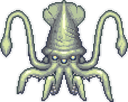
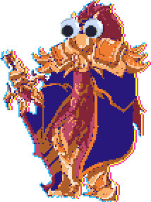

Ravager
|
The Ravager is the walking carcass of a failed ritual consisting of the main boss and its five body parts. It is summoned with the Death Whistle anywhere on the surface. It behaves similarly to the Golem, attempting to jump onto the player and slam back down on them and hit them with its claws. When its claws and feet are destroyed, sparks and fireballs will be shot from the empty sockets. It will also summon large stone pillars, fire-throwing pillars, homing missiles and, after its head is destroyed, bursts of lasers and white bolts in every direction. Each of its five body parts must be destroyed before the body itself can be damaged.
The Ravager drops flesh and bone themed weapons and two powerful accessories: The Flesh Totem, which cuts enemy contact damage in half every 15 seconds, and the Blood Pact, which doubles the player's maximum health, but allows them to be critically hit at a 25% chance. The Ravager also drops all ingredients to the Core of Calamity and also all the ingredients to the Life Alloy.
After Providence is defeated, all of its stats are buffed, its health raises to 708,325 (947,625 Expert Mode in Expert Mode, and 1,034,025 Revengeance Mode in Revengeance Mode) total, and it begins dropping Bloodstone. It also begins dropping the Bloodflare Core accessory, which grants benefits based on your current health and defense.
Astrum Deus
| 
Astrum Deus is a spacefaring creature fought anywhere at night. It is summoned by using the Titan Heart or Starcore at the Astral Beacon at night. The worm fires lasers and mines from its segments, and splits into two when under half of its health. In its second phase, defeating either of the worms will end the fight.
Astrum Deus drops astral-themed items and an abundance of Lunar Fragments, as well as allowing Astral Ore to be mined.
Hidden Bosses
Profaned Guardians
|
The Profaned Guardians are three eternal servants to Providence fought either in The Underworld or The Hallow. They are summoned by using a Profaned Shard in either the Underworld or the Hallow during the day. Each of the three entities serve a different role in the fight and possess various attacks, such as charging, shooting fireballs and flares, and firing holy spears.
The Profaned Guardians drop the Profaned Core, which is used to summon their Goddess. Each one can also drop a unique usable "Relic" item: Relic of Deliverance, Relic of Resilience, and Relic of Convergence.
Dragonfolly
|
Dragonfolly is a electrical bird-like dragon fought in the Jungle. It can be summoned using Exotic Pheromones in the Jungle. It attacks by flying around and charging incredibly quickly, launching bursts of electric feathers, birthing copies of itself, and creating sustained pillars of lightning.
Dragonfolly drops weapons themed around birds and red lightning, as well as Effulgent Feathers, which are used to craft the Blessed Phoenix Egg and the Silva armor.
Providence, the Profaned Goddess
| 
Providence, the Profaned Goddess is the brutal Goddess of fire and ash fought either in The Underworld or The Hallow. She is the first major Post-Moon Lord boss, and her defeat causes several prior bosses to be buffed. She is summoned in the Hallow or the Underworld using a Profaned Core. She has many dangerous attacks and several different phases, such as hiding in her cocoon while emitting stars and spears, dropping flare bombs on the player, shooting molten globes, and summoning Profaned Guardians. Additionally, she spawns a large crystal above the player or fires a Holy Ray depending on the biome she is spawned in. During the night, her color changes and her attacks become faster and stronger alongside many other changes.
Providence drops weapons themed around the profaned flame, and an abundance of Unholy Essence and Divine Geodes. If she is spawned in the Hallow, she will drop the highly mobile Elysian Wings. If she is spawned in the Underworld, she will drop the heavily defensive Elysian Aegis. She will always drop the Rune of Kos, a non-consumable item which is used to summon the Rune of Kos bosses. Uelibloom Ore will generate in Mud Blocks upon her first defeat.
Storm Weaver
|
Storm Weaver is a cosmic worm fought in the sky. It can be summoned by using the Rune of Kos while in the sky. It has two different forms and uses lightning bolts to attack, as well as dashing towards the player in phase 2.
Storm Weaver drops Armored Shells, a material used for the Cosmic Worm and several weapons.
Ceaseless Void
|
Ceaseless Void is a flying dark portal fought in the Dungeon. It can be summoned by using the Rune of Kos while in the dungeon. Its attacks consist of manipulating Dark Energies to orbit it, or pull them towards it in a spiral pattern.
Ceaseless Void drops Dark Plasma, a material used for the Cosmic Worm and several weapons.
Signus, Envoy of the Devourer
|
Signus, Envoy of the Devourer is a cosmic wraith fought in The Underworld. It can be summoned by using the Rune of Kos while in the Underworld. It attacks by shooting scythes and Cosmic Mines towards the player, along with spawning Cosmic Lanternas and dashing towards the player.
Signus drops Twisting Nethers, a material used for the Cosmic Worm and several weapons.
Polterghast
| 
Polterghast is a ravenous ethereal amalgamation fought in the Dungeon. It can be summoned by killing 30 Phantom Spirits or by using the Necroplasmic Beacon in the Dungeon. It has 3 different forms and various attacks from spitting bouncing bolts and mines to trying to ram into the player and hit them with its hooks, all while summoning minions and clones of itself to assist it.
Polterghast drops phantoplasmic-themed weapons, as well as Ruinous Souls, which are used to craft the Bloodflare armor. Defeating it causes some Abyss and Sulphurous Sea enemies to drop new items, as well as unlocking the final tier of the Acid Rain event.
The Old Duke
| 
The Old Duke is an old Fishron fought in the Sulphurous Sea. The Old Duke spawns after completing the Acid Rain event or can be summoned by fishing with a Bloodworm. It has 3 phases and multiple attacks, ranging from charging at the player to creating a massive sulphurous vortex. Its main mechanic is accounting for the player's movement before charging, essentially predicting where the player will move towards.
The Old Duke drops sulphur-themed weapons.
The Devourer of Gods
|
The Devourer of Gods is an enormous cosmic worm that can be fought anywhere. The Devourer of Gods is a difficult boss, requiring significant preparation before attempting to fight, and causing several changes to the world after its defeat. It is summoned with a Cosmic Worm anywhere at any time.
The Devourer of Gods drops cosmic-themed weapons, as well as Cosmilite Bars, a versatile Post-Moon Lord material.
After its defeat, the player gains access to Nightmare Fuel, Endothermic Energy, and Darksun Fragments from various now-buffed events.
Yharon, Dragon of Rebirth
| 
Yharon, Dragon of Rebirth is an Auric Dragon that can be fought anywhere. He is summoned with a Blessed Phoenix Egg anywhere at any time.
Yharon is incredibly powerful and has dozens of attacks and several phases, each harder than the last. Some of his attacks include summoning massive flarenados, ramming at great speeds, and creating many rings of fireballs while flying in quick loops. After defeating his first phase, his second phase begins with Yharon regaining his health, and then assaults the player with a new set of attacks including launching fireballs, creating rings of flares, and charging alongside teleports.
Yharon drops weapons themed around dragons and fire. When defeated for the first time, Auric Ore, one of the final crafting materials, will generate underground.
Exo Mechs
|
Draedon is a master blacksmith and scientist, and the player battles against his Exo Mechs: Ares, Apollo, Artemis, and Thanatos. Alongside Calamitas, they are the final bosses of the Calamity Mod, excluding hidden bosses, and are both arguably the hardest enemies to beat in the mod. The Exo Mechs are summoned anywhere by pressing the Contact button on a fully completed Codebreaker. The three Exo Mechs are upgraded versions of the three Mechanical bosses, with similar designs to the originals, but with unique attacks and an intricate fight progression that the player has influence over.
Each mech drops their own set of complex mechanical weaponry, as well as Exo Prisms, which are used to craft Draedon's Forge and Miracle Matter, and therefore the ultimate Exo weapons.
Supreme Witch, Calamitas
|
Supreme Witch, Calamitas is an incredibly powerful brimstone witch. Alongside Draedon and the Exo Mechs, she is the final boss of the Calamity Mod, excluding hidden bosses. She is summoned at an Altar of the Accursed at any time with Ashes of Calamity or Ceremonial Urn in the player's inventory. Calamitas' attacks are primarily enormous waves or floods of projectiles which are very difficult to dodge, which become more chaotic and introduce more elements as the fight progresses. She also summons servants to aid her, such as her brothers, Soul Seekers, and Sepulcher.
She drops royal items themed around hatred and the occult, as well as the Ashes of Annihilation crafting material, which are used alongside Exo Prisms to craft Shadowspec Bars, the final crafting material.
After her defeat, Calamitas will also spawn as the Brimstone Witch town NPC, allowing the player to utilize the Enchantment system to significantly modify or even transform their items.
Mini Bosses
Giant Clam
| 
The Giant Clam is a large clam mini-boss fought in the Sunken Sea. It makes nearby Clams aggressive and attacks by teleporting on top of the player and closing its shell, spawning additional Clams. In Hardmode, it gains additional attacks utilizing psychic pearls. It can be found uncommonly in the Sunken Sea.
It drops Navystone, the Amidias' Pendant and the Giant Pearl in Pre-Hardmode, as well as causing the Sea King town NPC to move in if he is not already present in the world. In Hardmode, it additionally drops Mollusk Husks, the Poseidon, the Clamor Rifle, the Shellfish Staff, and the Clam Crusher.
Earth Elemental
|
The Earth Elemental is a large armored earth-based mini-boss fought in the Cavern layer. It travels through blocks, floating directly at the player to deal contact damage. It also fires bursts of rock projectiles at the player. It will appear rarely in the Cavern layer during Hardmode, often ambushing unsuspecting players.
It drops the Aftershock, Slag Magnum and Earthen Pike.
Cloud Elemental
|
The Cloud Elemental is a well-armored air-based mini-boss fought in Space. She possesses several storm-themed attacks, including summoning tornadoes, Angry Nimbi, and lightning clouds, as well as teleportation and charging at the player. She can be found rarely in Space during Hardmode while it is raining, near Floating Islands.
She drops the Eye of the Storm, which summons a friendly cloud elemental and can be crafted into the Heart of the Elements, as well as the Storm Saber.
Cragmaw Mire
|
The Cragmaw Mire is a sulphuric shell-like mini-boss that spawns during the Acid Rain Event after Aquatic Scourge is defeated. It fires lasers and bubbles. In the 3rd Tier, it gains a 2nd phase where it fires teeth at the player and pulls them towards it with a tether.
It drops the Spent Fuel Container and the Nuclear Fuel Rod.
Armored Digger
|
The Armored Digger is a steel worm mini-boss that spawns in the cavern layer after Plantera has been defeated. It attacks by charging at the player and turning, akin to The Destroyer. It also fires small yellow projectiles from its segments, which fall and linger on the ground.
It drops Demonic Bone Ash, Dubious Plating, and Mysterious Circuitry.
Great Sans Shark
|
The Great Sand Shark is a vicious Sandstorm shark mini-boss fought in the Desert. It swims through the sand and leaps out to attack the player with special movements, while summoning Sand Sharks to assist it. It either spawns after killing 10 Sand Sharks, or is summoned by using a Sandstorm's Core in the Desert.
It drops a Grand Scale, which can be used to craft powerful upgrades to previous weapons.
Plaguebringer
|
The Plaguebringer is a bio-mechanical bee mini-boss fought in the Jungle. It acts very similar to Queen Bee, cycling between a horizontal ram and shooting stingers from above while spawning Plague Chargers. It appears randomly in the Jungle after Golem has been defeated, making the area quite hazardous to inhabit until the player acquires stronger gear.
It drops an abundance of Plague Cell Canisters, which can be crafted into several plague-related items. It also occasionally drops the Plagued Fuel Pack, a rogue-based accessory.
Colossal Squid
| 
The Colossal Squid is an enormous cephalopodic mini-boss fought in the Abyss. It is passive at first, only attacking the player if they get too close or deal damage to it. Once aggressive, it attempts to float onto the player and crush them underneath itself or shoot ink bombs. It appears in the third layer of the Abyss.
It drops lots of Black Ink, as well as the Calamari's Lament after Polterghast has been defeated.
Reaper Shark
|
The Reaper Shark is a brutal yet stealthy mini-boss fought in the Abyss. It is passive at first, only attacking the player if they get too close or deal damage to it. Once aggressive, it swims towards the player, being able to pass through blocks, and also charges them occasionally. It appears in the two lowest layers of the Abyss.
After Polterghast has been defeated, it drops the Valediction, Deep Sea Dumbbell, and Reaper Teeth, along with Anechoic Coating.
Eidolon wyrm
|
The Eidolon Wyrm is a large ghostly serpent mini-boss fought in the Abyss. They initially float nearby the player and deal no damage, but will become hostile if attacked. They attack by dealing contact damage with their heads. It appears in two lowest layers of the Abyss.
They drop an abundance of Lumenyl, Ectoplasm and Voidstone, as well as the Soul Edge, the Eidolic Wail and the Eidolon Staff after Polterghast has been defeated.
Mauler
|
The Mauler is a mutant shark mini-boss fought during the Acid Rain event after Polterghast has been defeated. It is passive at first, only attacking the player if they get too close or deal damage to it. Once aggressive, it swims extremely fast towards the player while shooting sulphuric mist at them. It also explodes if it is out of the water for too long.
It drops several Shark Fins, as well as the Sulphuric Acid Cannon.
Nuclear Terror
| 
The Nuclear Terror is a radioactive crustacean-like mini-boss fought during the Acid Rain event after Polterghast has been defeated. It attacks the player by teleporting and firing barrages of irradiated shots.
It drops the Phosphorescent Gauntlet and the Gamma Heart.
Hidden Boss
Primordial Wyrm
|
The Primordial Wyrm is a hidden boss fought deep within the Abyss. It is one of the hidden bosses in the Calamity Mod.
It drops the Halibut Cannon, an extremely powerful endgame gun, alongside the Eidolon Wyrm's loot.
XB-∞ Hekate
Primordial Wyrm
| 
XB-∞ Hekate is a joke hidden boss exclusive to the Get fixed boi seed. It is one of the three hidden bosses exclusive to the seed, and serves as an alternative route to Exo Mechs.
It drops Exo Mechs normal loot along with Pot of Pain, a food item that inflicts various fire debuffs.
Hidden Boss
Supreme Alchemist, Cirrus
|
Supreme Alchemist, Cirrus is a joke hidden boss exclusive to the Get fixed boi seed. She is one of the three hidden bosses exclusive to the seed and serves as an alternative route to Supreme Witch, Calamitas.
She drops the normal loot of Supreme Witch, Calamitas, along with Alicorn on a Stick.
Hidden Boss
THE LORDE
| 
THE LORDE is a joke hidden boss exclusive to the Get fixed boi seed. It is one of the three hidden bosses exclusive to the seed, and utilizes the various Boss AIs throughout the game.
Its only unique drop is the Suspicious Looking NO U, a light pet item.
Profile
Raditya Reskyananta Saputra
| 
10123255
IF-6